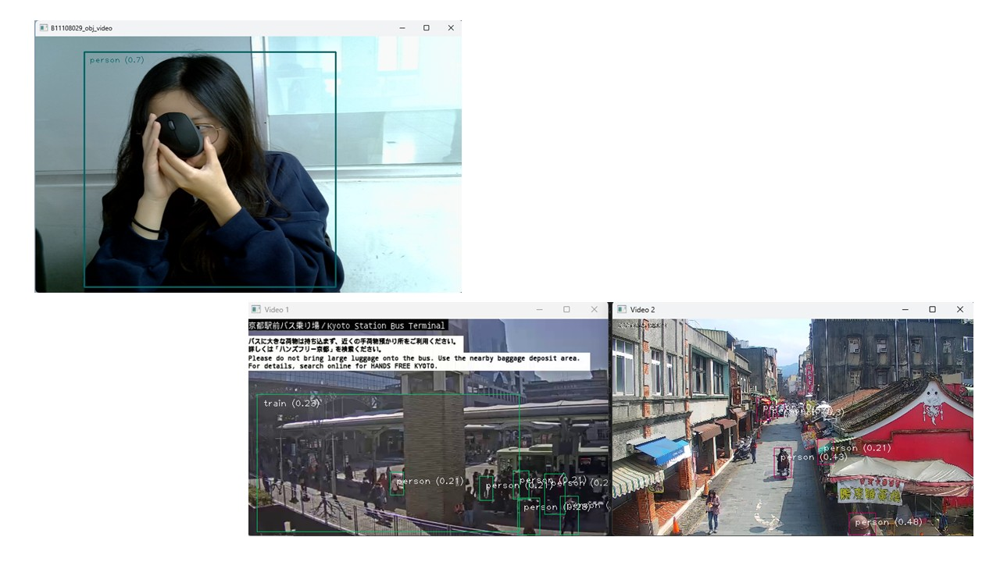

AI03X
MediaPipe 物件偵測 × 多來源應用
整合 MediaPipe 物件偵測，處理圖片、即時攝影機與 YouTube 串流三種來源。
功能簡介
本作品整合 MediaPipe 的物件偵測模組，使用 EfficientDet Lite 模型，實作於三種影像來源：靜態圖片、即時攝影機、YouTube 串流。支援畫框、標示類別與信心值，可應用於監控、教學與視覺整合展示等場景。
成果展示

程式碼片段
AI031｜圖片辨識
import cv2
import mediapipe as mp
base_options = mp.tasks.BaseOptions('efficientdet_lite0.tflite')
options = mp.tasks.vision.ObjectDetectorOptions(base_options, score_threshold=0.5)
detector = mp.tasks.vision.ObjectDetector.create_from_options(options)
cap = cv2.VideoCapture('pic/cat_and_dog.jpg')
success, image = cap.read()
image_mp = mp.Image(mp.ImageFormat.SRGB, image)
detection_result = detector.detect(image_mp)AI032｜即時偵測
import cv2
import mediapipe as mp
base_options = mp.tasks.BaseOptions('efficientdet_lite0.tflite')
options = mp.tasks.vision.ObjectDetectorOptions(base_options, score_threshold=0.5)
detector = mp.tasks.vision.ObjectDetector.create_from_options(options)
cap = cv2.VideoCapture(0)
while cap.isOpened():
success, image = cap.read()
image = cv2.resize(image, (800, 480))
image_mp = mp.Image(mp.ImageFormat.SRGB, image)
detection_result = detector.detect(image_mp)
for detection in detection_result.detections:
bbox = detection.bounding_box
category = detection.categories[0]
result_text = category.category_name + ' (' + str(round(category.score, 2)) + ')'
cv2.rectangle(image, (bbox.origin_x, bbox.origin_y),
(bbox.origin_x + bbox.width, bbox.origin_y + bbox.height), (0, 0, 255), 2)
cv2.putText(image, result_text, (10 + bbox.origin_x, 20 + bbox.origin_y),
1, 1, (0, 0, 255), 1)
cv2.imshow('Live Detection', image)
if cv2.waitKey(1) & 0xFF == 27:
break
cap.release()
cv2.destroyAllWindows()AI033｜YouTube 串流偵測
import cv2
import yt_dlp
import mediapipe as mp
base_options = mp.tasks.BaseOptions('efficientdet_lite0.tflite')
options = mp.tasks.vision.ObjectDetectorOptions(base_options, score_threshold=0.2)
detector = mp.tasks.vision.ObjectDetector.create_from_options(options)
video_url = "https://www.youtube.com/watch?v=v9rQqa_VTEY"
ydl_opts = {'format': 'best', 'quiet': True }
with yt_dlp.YoutubeDL(ydl_opts) as ydl:
info_dict = ydl.extract_info(video_url, download=False)
stream_url = info_dict['url']
cap = cv2.VideoCapture(stream_url)
while cap.isOpened():
success, image = cap.read()
image = cv2.resize(image, (600, 360))
image_mp = mp.Image(mp.ImageFormat.SRGB, image)
detection_result = detector.detect(image_mp)
for detection in detection_result.detections:
bbox = detection.bounding_box
category = detection.categories[0]
result_text = category.category_name + ' (' + str(round(category.score, 2)) + ')'
cv2.rectangle(image, (bbox.origin_x, bbox.origin_y),
(bbox.origin_x + bbox.width, bbox.origin_y + bbox.height), (100, 200, 0), 1)
cv2.putText(image, result_text, (10 + bbox.origin_x, 20 + bbox.origin_y),
1, 1, (255, 255, 255), 1)
cv2.imshow('YouTube Detection', image)